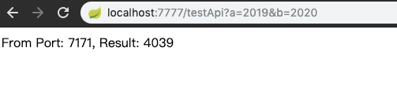
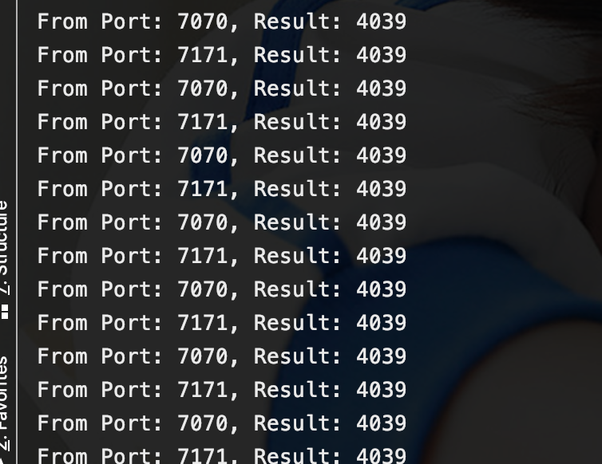

<parent>
<groupId>org.springframework.boot</groupId>
<artifactId>spring-boot-starter-parent</artifactId>
<version>2.0.3.RELEASE</version>
<relativePath/>
</parent>
<properties>
<project.build.sourceEncoding>UTF-8</project.build.sourceEncoding>
<project.reporting.outputEncoding>UTF-8</project.reporting.outputEncoding>
<java.version>1.8</java.version>
<spring-cloud.version>Finchley.RELEASE</spring-cloud.version>
</properties>
<dependencyManagement>
<dependencies>
<dependency>
<groupId>org.springframework.cloud</groupId>
<artifactId>spring-cloud-dependencies</artifactId>
<version>${spring-cloud.version}</version>
<type>pom</type>
<scope>import</scope>
</dependency>
</dependencies>
</dependencyManagement>
<!--加上上面的公共依赖-->
<dependencies>
<dependency>
<groupId>org.springframework.cloud</groupId>
<artifactId>spring-cloud-starter-netflix-eureka-server</artifactId>
</dependency>
</dependencies>
<build>
<plugins>
<plugin>
<groupId>org.springframework.boot</groupId>
<artifactId>spring-boot-maven-plugin</artifactId>
</plugin>
</plugins>
</build>
b、eureka-server启动类：
import org.springframework.boot.SpringApplication;
import org.springframework.boot.autoconfigure.SpringBootApplication;
import org.springframework.cloud.netflix.eureka.server.EnableEurekaServer;
@SpringBootApplication
@EnableEurekaServer
public class EurekaServerApplication {
public static void main(String[] args) {
SpringApplication.run(EurekaServerApplication.class, args);
}
}
c、eureka-server工程配置文件：eureka-server\src\main\resources\bootstrap.yml
server:
port: 8888
eureka:
instance:
hostname: localhost
client:
registerWithEureka: false
fetchRegistry: false
serviceUrl:
defaultZone: http://${eureka.instance.hostname}:${server.port}/eureka/
d、启动注册中心
mvn spring-boot:run
a、demo-client工程pom配置：
<!--加上上面的公共依赖-->
<dependencies>
<dependency>
<groupId>org.springframework.cloud</groupId>
<artifactId>spring-cloud-starter-netflix-eureka-client</artifactId>
</dependency>
</dependencies>
<build>
<plugins>
<plugin>
<groupId>org.springframework.boot</groupId>
<artifactId>spring-boot-maven-plugin</artifactId>
</plugin>
</plugins>
</build>
b、demo-client启动类：
import org.springframework.boot.SpringApplication;
import org.springframework.boot.autoconfigure.SpringBootApplication;
import org.springframework.cloud.client.discovery.EnableDiscoveryClient;
@SpringBootApplication
@EnableDiscoveryClient
public class ClientApplication {
public static void main(String[] args) {
SpringApplication.run(ClientApplication.class, args);
}
}
c、demo-client工程配置文件：demo-client\src\main\resources\bootstrap.yml
server:
port: 7070
spring:
application:
name: client
eureka:
client:
serviceUrl:
defaultZone: http://${eureka.host:127.0.0.1}:${eureka.port:8888}/eureka/
instance:
prefer-ip-address: true
d、编写测试接口：
import javax.servlet.http.HttpServletRequest;
import org.springframework.web.bind.annotation.GetMapping;
import org.springframework.web.bind.annotation.RestController;
/**
* 测试API
*/
@RestController
public class TestController {
@GetMapping("/testApi")
public String testApi(Integer a, Integer b, HttpServletRequest request) {
return " From Port: " + request.getServerPort() + ", Result: " + (a + b);
}
}
e、启动工程
mvn spring-boot:run
mvn spring-boot:run -Dserver.port=7171
启动了2个工程实例，一个端口是7070，一个是7171
a、demo-ribbon工程pom依赖：
<!--加上上面的公共依赖-->
<dependencies>
<dependency>
<groupId>org.springframework.cloud</groupId>
<artifactId>spring-cloud-starter-netflix-ribbon</artifactId>
</dependency>
<dependency>
<groupId>org.springframework.cloud</groupId>
<artifactId>spring-cloud-starter-netflix-eureka-client</artifactId>
</dependency>
</dependencies>
<build>
<plugins>
<plugin>
<groupId>org.springframework.boot</groupId>
<artifactId>spring-boot-maven-plugin</artifactId>
</plugin>
</plugins>
</build>
b、demo-ribbon工程启动类：
import org.springframework.boot.SpringApplication;
import org.springframework.boot.autoconfigure.SpringBootApplication;
import org.springframework.cloud.client.discovery.EnableDiscoveryClient;
import org.springframework.cloud.client.loadbalancer.LoadBalanced;
import org.springframework.context.annotation.Bean;
import org.springframework.web.client.RestTemplate;
@SpringBootApplication
@EnableDiscoveryClient
public class RibbonLoadbalancerApplication {
public static void main(String[] args) {
SpringApplication.run(RibbonLoadbalancerApplication.class, args);
}
//声明该RestTemplate用于负载均衡
@Bean
@LoadBalanced
public RestTemplate restTemplate() {
return new RestTemplate();
}
}
c、编写一个测试接口：
import org.springframework.beans.factory.annotation.Autowired;
import org.springframework.web.bind.annotation.GetMapping;
import org.springframework.web.bind.annotation.RestController;
import org.springframework.web.client.RestTemplate;
@RestController
public class TestController {
@Autowired
private RestTemplate restTemplate;
@GetMapping("/testApi")
public String testApi(Integer a, Integer b) {
//使用RestTemplate调用demo-client工程暴露的测试API接口
String result = restTemplate.getForObject("http://CLIENT/testApi?a=" + a + "&b=" + b, String.class);
System.out.println(result);
return result;
}
}
d、demo-ribbon工程配置文件：demo-ribbon\src\main\resources\bootstrap.yml
spring:
application:
name: ribbon-loadbalancer
server:
port: 7777
eureka:
client:
serviceUrl:
defaultZone: http://${eureka.host:127.0.0.1}:${eureka.port:8888}/eureka/
instance:
prefer-ip-address: true
e、启动demo-ribbon工程：
mvn spring-boot:run

从结果可以看到这次访问的是7171端口服务。
从下面的控制台输出可以看出，ribbon在做负载均衡的时候，默认使用的是轮询的方式！

入门成功！！！